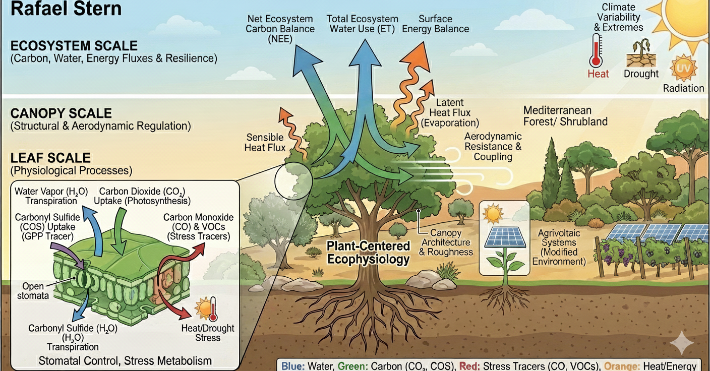
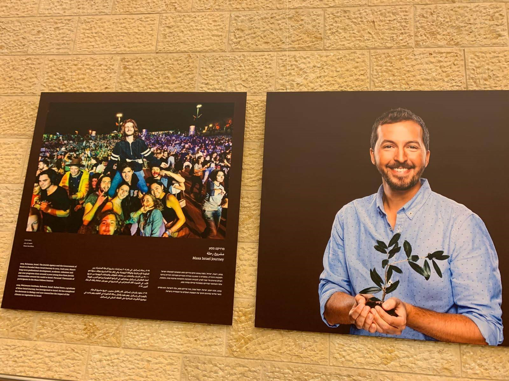

Plant-centered ecophysiology
I investigate how leaf physiology, stomatal regulation, canopy structure, rooting depth, and aerodynamic coupling scale up to ecosystem carbon, water, and heat exchange.
Postdoctoral Scholar, Stanford Earth System Science
I study how ecosystems exchange carbon, water, and energy with the atmosphere, and how those exchanges shape resilience under drought, heat, land-use change, and climate extremes.
About
My work connects plant ecophysiology, ecosystem-scale fluxes, greenhouse-gas budgets, and environmental decision-making. I combine field measurements, flux tower data, remote sensing, and machine-learning workflows to understand how terrestrial ecosystems respond to environmental stress.
Before Stanford, I worked at the Weizmann Institute of Science and served as a Mimshak Science and Policy Fellow in Israel's Ministry of Agriculture, where I helped translate environmental research into applied policy and public-facing materials.
Research
I investigate how leaf physiology, stomatal regulation, canopy structure, rooting depth, and aerodynamic coupling scale up to ecosystem carbon, water, and heat exchange.
At Stanford, I synthesize tropical wetland observations, flux tower records, Earth observation products, and machine-learning models to understand CH4 and CO2 dynamics under climate extremes.
My work on photovoltaic fields and afforestation examines land-use choices through carbon balance, surface energy exchange, albedo, and the time scales of climate mitigation.

Policy & Consulting
As a Mimshak Fellow, I worked with Israel's Ministry of Agriculture to connect research evidence with policy design, technical briefs, and public-facing communication.
I contributed to work on agrivoltaic systems and climate-smart land use, where energy, agriculture, water stress, and ecosystem function meet in the same landscape.
I build reproducible analyses with environmental observations, geospatial data, and statistical or machine-learning models, then translate results into clear narratives and figures.
Teaching
My teaching emphasizes mechanistic understanding: how physiological processes such as gas exchange, water stress, stomatal control, and plant-atmosphere coupling shape ecosystem-level patterns.
Media & Outreach

I enjoy turning complex environmental datasets into clear, usable stories for non-specialist audiences, decision makers, and public venues.
My outreach experience includes museum and visitor-center demonstrations, public talks, documentary work connected to Amazon field research, Brazilian media appearances about the Amazon rainforest, and climate communication for broad audiences.
Podcast conversation on COP30, climate negotiations, the Amazon, and how global climate decisions affect Brazil and frontline communities.
Listen on SpotifyInterview on Brazil's environmental challenges during COP30, including Amazon deforestation, fires, emissions, and the balance between climate policy and economic development.
Read in Israel HayomIsraeli newspaper coverage of Amazon aerosol research and how atmospheric particles, including black carbon from fires, shape climate warming.
Read on YnetVideo coverage of the study comparing photovoltaic fields and afforestation as climate-change mitigation strategies.
Watch on YouTubeCommentary on ecological imbalance and jellyfish blooms along Israel's coast.
Watch on GloboNewsPublications
2025
Stern, R., de Brito, J. F., Carbone, S., Rizzo, L. V., Muller, J. D., & Artaxo, P. (2025). Atmospheric Chemistry and Physics, 25, 9451-9469.
DOI: 10.5194/acp-25-9451-20252023
Stern, R., Muller, J. D., Rotenberg, E., Amer, M., Segev, L., & Yakir, D. (2023). PNAS Nexus, 2(11), pgad352.
DOI: 10.1093/pnasnexus/pgad3522026
Li, F., Zhu, Q., Yuan, K., Fluet-Chouinard, E., Zhang, X., Wang, J., Knox, S. H., You, H., Chen, M., Li, M., Stern, R., Hoyt, A. M., McNicol, G., Riley, W. J., Peng, S., Poulter, B., Malhotra, A., Cooley, S., Zhang, Z., Hong, S., Chen, Z., Zhu, Z., Raymond, P. A., Ciais, P., & Jackson, R. B. (2026). Nature Climate Change.
DOI: 10.1038/s41558-026-02609-w2025
Li, M., Li, F., Malhotra, A., Knox, S. H., Stern, R., & Jackson, R. B. (2025). Earth's Future, 13, e2024EF005751.
DOI: 10.1029/2024EF0057512025
Muller, J. D., Qubaja, R., Koh, E., Stern, R., Bohak, Y. L., Tatarinov, F., Rotenberg, E., & Yakir, D. (2025). New Phytologist.
DOI: 10.1111/nph.204242023
Yaakobi, A., Livne-Luzon, S., Marques, F., Mariani, B., Stern, R., & Klein, T. (2023). Forestry: An International Journal of Forest Research, 96(4), 530-546.
DOI: 10.1093/forestry/cpac0592021
Cochavi, A., Amer, M., Stern, R., Tatarinov, F., Migliavacca, M., & Yakir, D. (2021). New Phytologist, 230, 1394-1406.
DOI: 10.1111/nph.172472019
Yang, F., Qubaja, R., Tatarinov, F., Stern, R., & Yakir, D. (2019). Atmospheric Chemistry and Physics, 19, 3873-3883.
DOI: 10.5194/acp-19-3873-20192016
Whitehead, J. D., Darbyshire, E., Brito, J., Barbosa, H. M. J., Crawford, I., Stern, R., Gallagher, M. W., Kaye, P. H., Allan, J. D., Coe, H., Artaxo, P., & McFiggans, G. (2016). Atmospheric Chemistry and Physics, 16, 9727-9743.
DOI: 10.5194/acp-16-9727-2016See the complete publication record on Google Scholar.
Contact